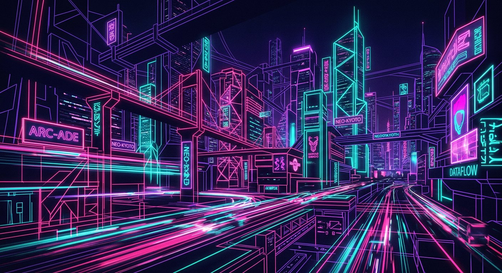

Arch Linux tabanlı • Archiso • Hiroki Installer • Tek masaüstü: NEOX
Felsefe: Tek, özenle bütünleştirilmiş bir masaüstü deneyimi.
neox-gradient
(varsayılan)
geometric-waves
minimal-mountain

abstract-neon
space-theme
Not: Önizlemede koyu tema nedeniyle dış CSS yüklenemeyebilir; indirildiğinde duvar kağıtları tam kalite JPG olarak çalışır.
| Adım | Açıklama |
|---|---|
| Mod seçimi | wipe (diski sil ve kur) veya partition (mevcut bölüme kur) |
| Disk / bölüm | Hedef disk ve (partition modunda) root/boot bölümü seçimi |
| Kullanıcı | Kullanıcı adı, bilgisayar adı, parola |
| Dil / klavye / saat dilimi | tr_TR.UTF-8 / en_US.UTF-8, trq / us, Europe/Istanbul / UTC |
| Önizleme + onay | Disk yazma işlemleri yalnızca açık onaydan sonra başlar |
| Kurulum | Bölümleme, pacstrap, NEOX kurulumu, hiroki-dm etkinleştirme, GRUB |
| Bitti | Yeniden başlat → NEOX ile giriş 🌸 |
Derle: cd hiroki-os && sudo ./build.sh → out/hiroki-os-1.0-x86_64.iso
Doğrula: sha256sum -c out/*.sha256
QEMU Live: qemu-system-x86_64 -enable-kvm -m 4096 -cdrom out/*.iso -boot d
Donanım algıla: hiroki-hw-detect && cat /tmp/hiroki-hw-info.json
Kurulumu başlat: hiroki-installer-launch Welcome: hiroki-welcome --force
Tema: hiroki-theme-manager Güncelle: hiroki-update Sürücü: hiroki-driver-manager Btrfs: hiroki-btrfs-assistant Ağ/DNS: hiroki-network-manager Kernel: hiroki-kernel-manager Hello Update: hiroki-hello-update
Özellikler, ekran görüntüleri, hızlı başlangıç, NEOX masaüstü tanıtımı, yapı haritası.
Archiso gereksinimleri, derleme adımları, QEMU/VBox test, sorun giderme.
BIOS/UEFI, Hiroki Installer akışı, otomatik/manuel bölümleme, dual-boot.
GTK/ikon/GRUB/Plymouth, NEOX kabuğu özelleştirme, kendi teman.
+ CONTRIBUTING.md (PR süreci), LICENSE (GPLv3), TESTING.md (test kontrol listesi), FILEMAP.md (tam harita)